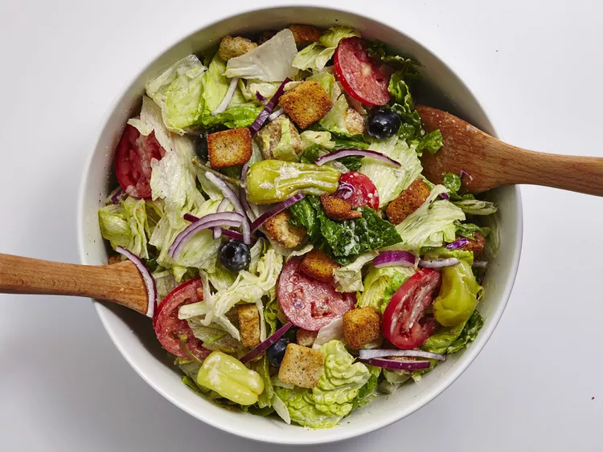

Copycat olive garden salad

Description
Make your favorite copycat Olive Garden salad with its addicting, delicious dressing at home!
Combine simple salad ingredients with a zesty, slightly sweet,
slightly tangy Italian dressing for the most perfect salad recipe ever!
ingredients
dressing:
- 1/4 cup extra-virgin olive oil
- 3 tablespoons mayonnaise
- 1 tablespoon white wine vinegar
- 1 tablespoon fresh lemon juice
- 1 1/2 teaspoons white sugar
- 1 teaspoon kosher salt
- 3/4 teaspoon freshly ground black pepper
- 1/2 teaspoon Italian seasoning
- 1 garlic clove, crushed
- 1/4 cup freshly grated Parmesan cheese
salad:
- 2 (5 ounce) packages American salad mix
- 3/4 cup pitted black olives
- 3/4 cup pickled pepperonis
- 1/2 cup thinly sliced red onion
- 2 plum tomatoes, sliced
- 1 (4 1/2 ounce) package large seasoned croutons
Steps
- Combine olive oil, mayonnaise, vinegar, lemon juice, sugar,
salt, pepper, Italian seasoning, garlic, and Parmesan in a food processor,
and process until thoroughly combined.
- Combine salad mix, olives, pepperonis, onion, tomatoes,
and croutons in a large bowl. Drizzle salad with dressing; toss to coat.
Let stand for 5 minutes before serving.